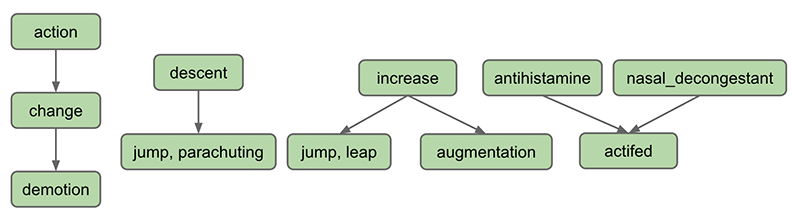
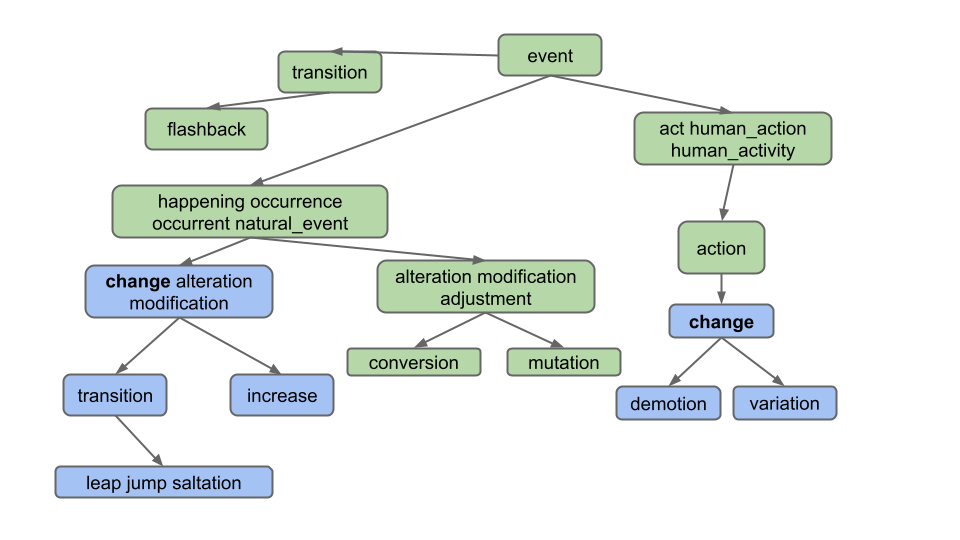

项目 2B：Ngordnet (Wordnet)¶
常见问题¶
每个作业顶部都会提供 FAQ 链接。你也可以在网址末尾添加"/faq"访问。项目 2B 的 FAQ 位于此处。
在本项目中，你将完成 NGordnet 工具的实现。
由于这是较新的项目，规范可能存在偶发错误或表述不清之处。如果你发现此类问题，请在Ed论坛反馈。
设计说明¶
当你在设计项目时，需提前全面考量所有需求。预先规划将确保您在项目推进至特定阶段时，无需重写全部代码。
若您发现自己频繁复制粘贴或重复编写大量相似代码，这很可能表明存在直接复用机会或者对现有代码进行微调实现复用，从而显著减少重复劳动。
项目设置¶
Danger
本项目设置与其他实验/项目不同。请勿跳过此步骤！
框架设置¶
- 与其他课程作业类似，运行
git pull skeleton main获取本项目的框架代码。 - 通过此链接下载本项目的
data文件，并将其移动到与src同级的proj2b文件夹。 - 将你在 2A 中实现的
ngrams模块（包括TimeSeries和NGramMap）复制到proj2b.src.ngrams包。
Warning
若未完成 2A ，请跳过框架设置的步骤 3 。我们在框架文件中提供了 2A 的精简版解决方案。它包含支持 countHistory 方法的 NGramMap 实现，能够满足完成2B的需求。然而，它不包含 TimeSeries 的实现。框架文件中许多部分需要定义 TimeSeries 类才能编译，因此你必须注释掉这些部分或自行添加 TimeSeries 的实现。
Info
在过往的学期中，某些低效的 NGramMap 和 TimeSeries 实现通过了 2A 自动评分器，但在 2B 中失败。如果你遇到自动评分器超时问题，我们建议恢复为 2A 的官方解决方案。
Info
如果你用自己的实现替换了 NGramMap，但后来更愿意使用官方解决方案，应通过 git restore 恢复原始框架版本（检查你的 git log）。你可以在实验 4 中了解更多相关信息。或者，你也可以从此处框架仓库复制内容。
完成设置后，proj2b 目录结构应如下：
proj2b
├── data
│ ├── ngrams
│ └── wordnet
├── src
│ ├── <2B helper files>
│ ├── browser
│ ├── demo
│ ├── main
│ ├── ngrams
│ │ ├── <来自2A的NGramMap实现>
│ │ └── <来自2A的TimeSeries实现>
│ └── plotting
├── static
└── tests开始实现¶
Warning
重要提示： 在开始编码甚至设计项目之前，您需要先完成项目 2B：检查点。我们认为这将有助于您理解项目。我们还将要求您向Gradescope提交设计文档。有关设计文档的更多详细信息可在提交与评分部分找到。
项目的这一部分旨在引导您为实施设计高效且正确的方案。您提出的设计对于处理这些案例至关重要。请在开始设计文档前仔细阅读 2B 规范。
课程团队已创建了若干介绍项目和初始代码的引导视频，可在此处获取。请注意我们已经更改了项目结构，因此某些信息可能已过时！
我们还创建了两个出色的工具，您（并且应该！）可以使用它们来探索数据集,观察官方解决方案对特定输入的行为,获取单元测试的预期输出（参见测试您的代码）。这些工具的链接将在此处以及规范其他相关部分提供：
- WordNet可视化工具：通过视觉理解同义词集(synsets)和下义词(hyponyms)的工作原理，测试不同单词/单词列表作为潜在测试用例输入。点击"？"气泡了解工具功能！
- 官方方案网页版：生成不同测试用例输入的预期输出。使用此工具编写单元测试！
使用WordNet数据集¶
在将 WordNet 集成到项目之前，我们首先需要理解 WordNet 数据集。
WordNet 是一个"英语语义词典"，被计算语言学家和认知科学家广泛使用；例如，它是 IBM Watson 的关键组件。WordNet 将单词分组为称为同义词集(synsets)的同义词集合，并描述它们之间的语义关系。其中一种关系是 is-a 关系，它将下义词(hyponym)(更具体的同义词集)连接到上义词(hypernym)(更泛化的同义词集)。例如，"change"是"demotion"的上义词，因为"demotion"是(is-a)"change"的一种类型。"change"反过来又是"action"的下义词，因为"change"是(is-a)"action"的一种类型。下图展示英语中一些下义关系的可视化表示：

上图中的每个节点是一个 同义词集 。同义词集由一个或多个具有相同含义的英语单词组成。例如，一个同义词集是"jump, parachuting"，它表示使用降落伞降落到地面的行为。"jump, parachuting"是"descent"的下义词，因为"jump, parachuting"是(is-a)"descent"。
英语单词可能属于多个同义词集。这只是表达单词可能有多种含义的另一种方式。例如，单词"jump"还属于同义词集"jump, leap"，它表示更比喻性的跳跃概念(例如出席率的跃升)，而不是另一个同义词集中字面意义的跳跃(例如跳过水坑)。同义词集"jump, leap"的上义词是"increase"，因为"jump, leap"是(is-an)"increase"的一种类型。当然，还有其他"增加"事物的方式：例如，我们可以通过"augmentation"来增加事物，因此在上图中从"increase"指向"augmentation"的箭头也就不足为奇。
同义词集不仅包含单词，还包含所谓的搭配词(collocations)。你可以将这些视为经常相邻出现以至于被视为一个单词的组合，例如nasal_decongestant。为避免歧义，我们将用下划线_分隔搭配词的组成单词，而不是英语中通常使用的空格分隔。为简化起见，在本文档中我们将搭配词统称为"单词"。
一个同义词集可能是多个同义词集的下义词。例如，"actifed"既是"antihistamine"也是"nasal_decongestant"的下义词，因为"actifed"同时属于这两种类型。
Info
提示：可通过这个网址浏览WordNet数据库（非必需）
基础下义词处理¶
设置HyponymsHandler¶
-
在网页浏览器中打开static文件夹内的
ngordnet.html文件。作为提醒，您可在此处项目符号 1 中找到操作指南。您将看到新增的"Hyponyms"按钮，同时请注意新增的k输入框。 -
尝试点击 Hyponyms 按钮。您会看到没有任何反应（若打开浏览器的开发者工具功能，将看到浏览器显示错误信息）。
在项目 2B 中，您的主要任务是实现此按钮功能，这需要读取不同类型的数据集，并与项目 2A 的数据集结果进行合成。与 2A 不同，本任务将完全由您自主决定需要哪些支持类。
-
编辑名为
HyponymsHandler的文件，使用户点击浏览器中的Hyponyms按钮时返回"Hello!"。需使HyponymsHandler类继承NgordnetQueryHandler类（参考其他Handler类示例），注册处理器时确保将字符串"hyponyms"作为register方法的首个参数（而非"hyponym"）。 -
首先打开
ngordnet.main.Main.java文件。 -
修改
Main类注册新处理器处理 hyponyms 请求后，启动Main并再次点击 Hyponyms 按钮，此时应显示"Hello"文本。
Info
若出现"无法加载文件 some_file_here.txt "错误，很可能说明你的项目设置不正确。请确认你的目录结构与"项目设置"章节一致。
基础版下义词处理器¶
接下来，您将实现Hyponyms按钮的部分功能。当前该按钮应：
- 假设输入的"words"仅为单个单词
- 忽略startYear、endYear和k参数
- 返回单个单词的下义词列表的字符串表示（包含单词本身），列表按 字母顺序排列 且 无重复单词
例如，假设WordNet数据集如下所示（对应输入文件 synsets11.txt 和 hyponyms11.txt）。用户输入"descent"并点击Hyponyms按钮时：
此时处理器的输出应为包含"descent"、"jump"和"parachuting"的列表字符串，即 [descent, jump, parachuting]。注意单词按字母顺序排列。
另一示例：使用更大数据集（文件 synsets16.txt 和 hyponyms16.txt）：

用户输入"change"并点击 Hyponyms 按钮时，下义词为下图中蓝色节点的所有单词：

输出应为 [alteration, change, demotion, increase, jump, leap, modification, saltation, transition, variation]。注意即使"change"属于两个同义词集，输出中仅出现一次。
注意：避免过度复杂化。特别注意输出 不包含：
-
同义词的同义词（如不包含
"adjustment"） -
同义词的下义词（如不包含
"conversion"） -
其他下义词定义的下义词（如不包含
"flashback"，它是"transition"另一释义的下义词）
Task
实现 HyponymsHandler.java 及辅助类。
注意：请阅读下方提示，不应将所有代码写入此类。
Warning
完成此任务需确定支持 HyponymsHandler 的辅助类。切勿将所有实现集中在HyponymsHandler中。应创建辅助类，例如 2A 中为"History"按钮实现 NGramMap 类，2B 中需构建自有类实现类似功能。
同时需理解WordNet数据集的输入格式（详见下节说明）。
Danger
严禁导入现有图库（如普林斯顿算法教材的可选图实现），需自主构建一个或多个图类。
TIPS
-
类似2A的NGramMap，辅助类应在构造函数中单次解析输入文件。禁止创建每次调用都重读整个文件的方法（效率过低）！
-
我们强烈建议至少创建两个类：一个实现有向图概念的类，一个读取WordNet数据集并构建有向图实例的类（该类需能接收单词返回其下义词）。可额外创建遍历辅助类但非必需，遍历也可在图类中实现。
-
暂无需编写Truth测试（后续说明），使用网页前端验证"descent"和"change"示例（
synsets16.txt和hyponyms16.txt）。 -
应为辅助类编写单元测试，但另一有效测试方式是：运行
Main.java、打开ngordnet.html、输入参数并点击Hyponyms按钮，可视化调试可能会给你带来意外发现。
WordNet文件格式¶
现在描述存储WordNet数据集的两种数据文件类型。这些文件采用逗号分隔格式，即每行包含由逗号分隔的字段序列。
文件类型1：名词同义词集列表。文件 synsets.txt（及其他名称含 synset 的小文件）列出WordNet所有同义词集。每行格式包含三个逗号分隔字段：字段1是同义词集ID（整数），字段2是同义词集（synset），字段3是词典定义。例如行
"6829,Goofy,a cartoon character created by Walt Disney"
表示同义词集{Goofy}的ID为6829，定义为"华特·迪士尼创作的卡通人物"。同义词集内单词用空格分隔（单词本身不能含空格）。S个同义词集ID从0到S-1连续编号，文件内ID连续排列。这些ID在下义词文件（类型2）中会使用。
文件类型2：下义词列表。文件hyponyms.txt（及其他名称含"hyponym"的小文件）包含下义关系：字段1是同义词集ID，后续字段是该同义词集的直接下义词ID。例如行
79537,38611,9007
表示同义词集79537（"viceroy vicereine"）有两个下义词：38611（"exarch"）和9007（"Khedive"），表明exarch和Khedive都是总督类型（或总督夫人）。同义词集信息来自 synsets.txt 文件的对应行：
79537,viceroy vicereine,governor of a country or province who rules...
38611,exarch,a viceroy who governed a large province in the Roman Empire
9007,Khedive,one of the Turkish viceroys who ruled Egypt between...
同义词集ID可能对应多行。例如在 hyponyms16.txt 中：
11,12
11,13
这表明同义词集12和13都是11的直接下义词。这两行也可合并为单行，即下方行具有完全相同的含义（表明12和13都是11的直接下义词）：
11,12,13
您可能疑惑为何存在两种等效表述方式。现实数据常存在此类冗余，需妥善处理。
注意：现实数据常存在此类冗余表述，需妥善处理。
建议步骤¶
实现"Hyponyms"按钮需：
- 开发 图类（不熟悉可参考第22/23讲）。编写独立于数据文件的测试（如验证
createNode/addEdge通过getNodes/neighbors测试） - 编写将 WordNet文件转换为图的代码（可作为图类的一部分或独立类）
- 编写通过 图遍历 获取单词下义词的代码
强烈建议：
- 基于前述示例编写测试（如验证
synsets11/hyponyms11中"descent"的下义词） - 测试应匹配抽象层次（如
TestGraph测试图类，TestWordNet测试WordNet类）
作为另一个示例，我们的代码有一个TestWordNet类包含代码如下：
@Test
public void testHyponymsSimple(){
WordNet wn = new WordNet("./data/wordnet/synsets11.txt", "./data/wordnet/hyponyms11.txt");
assertThat(wn.hyponyms("antihistamine")).isEqualTo(Set.of("antihistamine", "actifed"));
}注意您的 WordNet 类可能与我们的函数不同，因此所示测试无法直接适用于您的代码；注意该测试完全不使用 NGramMap、HyponymsHandler或直接调用 Graph 对象，而是专为测试 WordNet 类设计；仅依赖浏览器测试将极其低效且令人沮丧，请运用JUnit技能验证基础抽象类（如Graph、WordNet等）的可靠性。
设计提示¶
本项目涉及多种查询操作、图操作和数据处理操作，不存在唯一正确实现方式。
需执行的查询操作示例：
- 给定单词（如"change"），哪些节点包含该单词？
- 示例（synsets16.txt）："change"位于同义词集2和8中
- 给定整数索引，对应哪个节点？
- 处理hyponyms.txt必需。例如在hyponyms16.txt中，已知同义词集8指向9和10，因此需能定位节点8获取其相邻节点
- 给定节点，该节点包含哪些单词？
- 示例（synsets16.txt）：同义词集11包含"alteration"、"modification"和"adjustment"
需执行的图操作示例：
- 创建节点（如synsets16.txt每行包含一个节点信息）
- 为节点添加边（如hyponyms16.txt每行包含应添加到对应节点的一条或多条边）
- 查找可达顶点（如hyponyms16.txt中从顶点7可达的顶点为7、8、9、10）
为类选择能自然解决上述六个问题的实例变量和/或数据结构，将大幅简化实现。
数据处理操作示例：
- 给定对象集合，如何找出所有非重复项？（提示：特定数据结构可高效实现）。请大胆查阅所选数据结构的文档（如选用TreeMap，可搜索"TreeMap方法 Java"、"Map方法 Java"或"Collection方法 Java"等）
- 给定对象集合，如何进行排序？（提示：搜索对应集合的排序方法）
Warning
项目2A提醒：深层嵌套泛型是设计过度复杂的警示。应寻找更简方案或创建辅助类管理复杂度。例如若使用类似Map<Set<Set<...的结构，表明已陷入不必要的复杂路径
Warning
常规建议：若设计导致进展困难，请果断删除现有实例变量重新设计。本项目的难点在于设计而非编程，您随时可通过git恢复旧设计
处理单词列表¶
严格按原文格式的翻译：¶
您的下一任务是处理单词列表输入。例如用户输入"change, occurrence"时（对应下图），应仅返回所有单词的共同下义词，即 [alteration, change, increase, jump, leap, modification, saltation, transition]。"Demotion"和"variation"未包含在内，因为它们不是所有输入单词的下义词（特别不是"occurrence"的下义词）。

可见仅需返回属于列表中所有单词共同下义词的单词。注意用户输入的单词列表可包含两个以上单词（尽管本文档示例仅展示两个单词）。
注意两个单词可能共享下义词但不同属同节点。参考此例：用户输入"car, bug"时（对应下图），应返回[beetle]而非空列表[]！此例表明我们获取的是 单词 交集而非 节点 交集。

更多完整数据集示例（使用synsets.txt/hyponyms.txt）：
- 输入"video, recording"应返回
[video, video_recording, videocassette, videotape]（均为video和recording的共同下义词） - 输入"pastry, tart"应返回
[apple_tart, lobster_tart, quiche, quiche_Lorraine, tart, tartlet]
Task
请修改 HyponymsHandler 及其他相关实现以支持多词输入场景。
Warning
测试建议：使用 synsets16.txt 以及 hyponyms16.txt 手动构建测试用例，通过网页前端验证正确性。
处理 k != 0 参数¶
此前我们处理了 k = 0 的情况（用户未输入 k 时的默认值）。
您的任务是处理用户输入 k 值的情况。k 表示输出中下义词的最大数量。例如输入"dog"且 k = 5 时，代码最多返回 5 个单词。
应选择请求时间段内出现次数最多的 k 个下义词。例如输入words = ["food", "cake"]，startYear = 1950，endYear = 1990，k = 5时，需找出 1950-1990 年间既是food又是cake下义词的5个最高频单词。频率定义为该时间段内单词总出现次数，结果按字母序排列。使用 top_14377_words.csv, total_counts.csv, synsets.txt 以及 hyponyms.txt 时输出应为[cake, cookie, kiss, snap, wafer]。（自动评分器未使用这些文件，因此该查询返回空列表）
Danger
确保获取最高出现次数的单词（而非最高权重），否则将引发难以调试的问题。
注意：若前端未提供年份，NGordnetQueryHandler.readQueryMap 会使用默认值startYear=1900，endYear=2020。
大文件测试 k != 0较困难，我们提供可视化课程数据集（基于HKN启发的EECS课程要求）：文件frequency-EECS.csv，hyponyms-EECS.txt，synsets-EECS.txt。输入words = ["CS61A"], startYear = 2010, endYear = 2020, k = 4应返回[CS170, CS61A, CS61B, CS61C]。该 frequency-EECS.csv 包含相同频率值，建议仔细研究（设计时需考虑频率相同的情况）。
时间段内出现次数为0的单词不应返回（即 k > 0 时不显示 ngrams 数据集未包含的单词）。
无非零计数单词时返回空列表[]。
有效单词少于 k 时返回全部（如输入"potato"且k = 15，但仅有 7 个有效下义词时只返回7个单词）。
本任务较复杂，因需传递信息使 HyponymsHandler 能访问有效 NGramMap。
Task
修改 HyponymsHandler 及其他实现以支持k != 0 场景。
Warning
EECS数据集在网页版官方方案不可用（输入 CS61A 无返回），但自动评分器会提供EECS数据集的测试数据和预期响应。建议据此在本地复现调试。
Danger
严禁创建静态NGramMap！ 避免创建全局变量（如public static NGramMap），应通过构造函数或方法传递NGramMap。软件工程课程将详述此问题。
建议：
- 使用前文示例：
words = ["food", "cake"],startYear = 1950,endYear = 1990,k = 5。 - 当你创建你的测试集时，建议创建自定义输入文件（大文件测试繁琐）。
提交与评分¶
项目 2B 的唯一必需提交物是 HyponymsHandler.java 文件及其辅助类。但我们不会直接对这些辅助类评分，因为其实现会因学生而异。
- Project 2B 检查点: 2.5 分 - 截止日期 3 月 21 日
- Project 2B 设计文档: 2.5 分 - 截止日期 3 月 21 日
- Project 2B 代码实现: 80 分 - 截止日期 4 月 4 日
- HyponymsHandler k = 0，单个单词，每次测试单次查询
- HyponymsHandler k = 0，单个单词，每次测试多次查询
- HyponymsHandler k = 0，多个单词，每次测试单次查询
- HyponymsHandler k = 0，多个单词，每次测试多次查询
- HyponymsHandler k ≠ 0，单个单词，每次测试单次查询
- HyponymsHandler k ≠ 0，单个单词，每次测试多次查询
- HyponymsHandler k ≠ 0，多个单词，每次测试单次查询
- HyponymsHandler k ≠ 0，多个单词，每次测试多次查询
- HyponymsHandler 无效输入处理
如前所述，您必须提交设计文档。该文档价值 2.5 分，截止日期为 3 月 21 日。设计文档的主要目的是为您的项目奠定基础。在编码前进行思考和构思非常重要。我们在设计文档中关注的是：
- 识别课程中学到的、您将在实现中使用的数据结构。
- 您实现算法的伪代码/总体概述。
您的设计文档应约 1 - 2 页长。设计文档的评分主要基于努力程度、思考深度和完成度。
请复制此模板并提交到Gradescope。
如果您之后决定修改设计文档，请不用担心。您可以自由修改！我们希望您在编码前思考实现方案，因此要求您将设计作为项目的一部分提交。
本项目的令牌限制政策如下：您将从 8 个令牌开始，每个令牌有 24 小时的刷新时间。
测试你的代码¶
我们在 proj2b/tests 目录提供两个单元测试文件：
- TestOneWordK0Hyponyms.java
- TestMultiWordK0Hyponyms.java
提供的两个测试文件对应本项目已实现的前两种核心场景：
- k = 0 的单字下义词查询：检索单个单词的所有下义词
- k = 0 的多字下义词查询：检索多个单词的共同下义词（如
gallery, bowl）
你需要完善 AutograderBuddy.java 以支持代码测试，具体提交要求详见代码提交章节。
当前测试文件仅包含基础检查用例，实际覆盖率不足。每文件仅有一个完整性验证测试，您应当：为每类场景补充更多单元测试，以此为模板创建两套新测试文件（分别对应k≠0的单字/多字查询）
测试用例的预期输出可参考开始实现章节链接的两种工具：WordNet可视化工具，官方方案网页版。
调试技巧¶
- 测试时使用小文件！ 这能减少运行
Main.java的启动时间，并降低代码理解难度。运行Main.java时，小文件配置在main方法的前几行；进行单元测试时，文件名通过getHyponymsHandler方法参数传递。 - 通过调试器运行
Main.java快速测试不同输入。 点击 "Hyponyms" 按钮后，代码会在调试器中执行,此时断点会被触发，你可以查看变量窗口等进行调试。 - 本项目包含多个协同模块，不要从逐行调试开始。 应先缩小范围定位故障函数/代码区域，再深入检查相关代码行。
- 查阅 FAQ 解决常见问题和疑问。
代码提交¶
在本作业中，我们一直让您使用前端测试代码。我们的自动评分器不够复杂，无法模拟网页浏览器调用您的代码。因此，我们需要您在 proj2b.src.main.AutograderBuddy 类中提供一个方法，该方法能提供处理下义词请求的处理器。
当您在本规范开始时运行 git pull skeleton main 命令，您应该已收到名为 AutograderBuddy.java 的文件。
打开 AutograderBuddy.java 并填充 getHyponymsHandler 方法，使其返回使用四个指定文件的 HyponymsHandler 。您在此处的代码应与 Main.java 中的代码非常相似。
现在您已创建 proj2b.src.main.AutograderBuddy，可以提交到自动评分器。如果任何测试失败，您应该能够基于上述测试文件构建JUnit测试在本地复现它们。如需额外数据文件，它们会以链接形式添加到本节。
致谢¶
本项目的WordNet部分参考了普林斯顿大学Alina Ene和Kevin Wayne的Wordnet 作业。